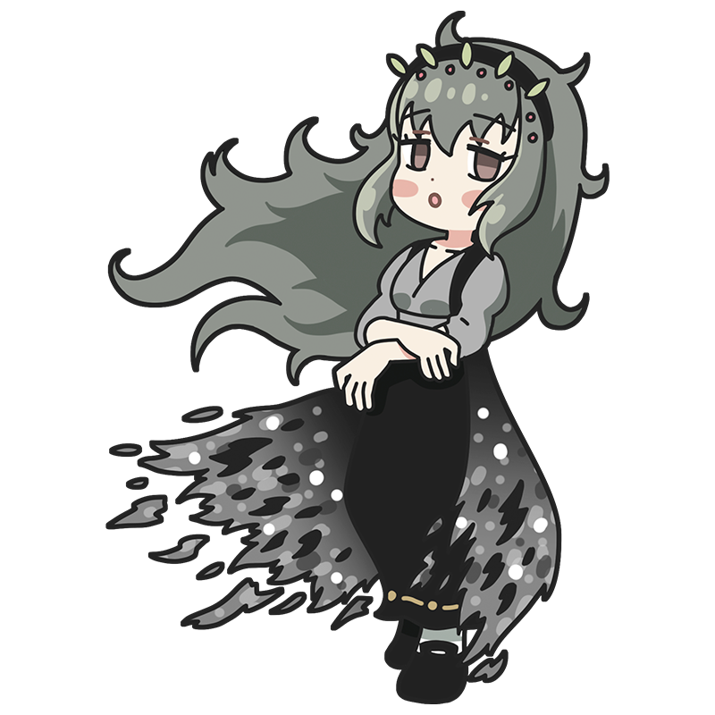

Oh my…
you seem like a rather dreamy sort of person,
don’t you?
Corot
The faint shadow of you that I gazed upon that day,
lingering in the silver forest
The muse of the Barbizon School. She has left behind many dreamlike landscape paintings in muted tones. She has a dreamy personality herself, and it’s sometimes hard to tell what she’s thinking. Her hobby is giving people souvenirs.
Style
Hometown
France
Classics
- "Souvenir of Mortefontaine"
- "Woman with a Pearl"
- "Souvenir of the Beach of Naples" etc.
This is the Corot piece!
Souvenir of Mortefontaine
An artwork depicting the scenery of the Forest of Fontainebleau, located south of Paris. As the title “Souvenir” suggests, it is not a faithful reproduction of an actual landscape, but rather a rendering based on the impressions Corot gained from observing the forest. It is believed that Corot referred to the newly invented medium of photography at the time, and the overall use of soft, silvery tones is often attributed to that influence.
Year
1864
Medium
Oil on canvas
Dimension
65cm x 89cm
Collection
Louvre Museum
（France)
Who is Corot?
Camille Corot
A leading master of the Barbizon School, alongside Millet. He produced portraits and landscapes featuring ordinary people, but is especially known for his silvery landscapes rendered in soft, muted tones, which had a significant influence on later Impressionist painters. Known affectionately as “Uncle Corot” for his kindness toward younger artists, he would sometimes add his own signature to the works of struggling painters to increase their value—an act that has since made the authentication of his works more difficult.
Full Name
Jean-Baptiste Camille Corot
Born
July 16, 1796
Died
February 22, 1875(aged 78)